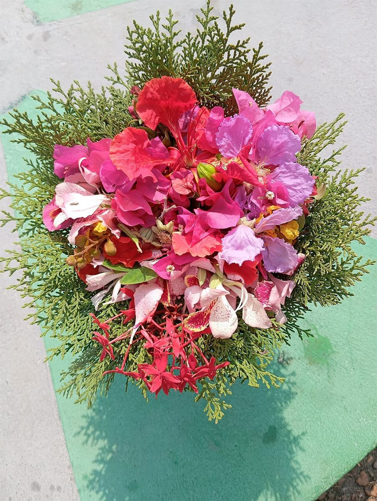

口コミ
こんな声が届くかもしれない
カフェという業種から自然に想像できる声を、制作側が創作したものです。
以下は制作側が考えた創作のイメージ例で、実在のお客様の投稿ではありません。実際の口コミ・評価とは関係ありません。
いつか行ってみたいカフェです。まずはInstagramをのぞいて、どんなお店なのか見てみたいと思います。
店名の響きが気になります。Instagramをのぞいてみて、気になったら電話で聞いてみるつもりです。
青森市へ出かけることがあれば、立ち寄ってみたいです。営業時間が分かったら、予定を考えてみます。
